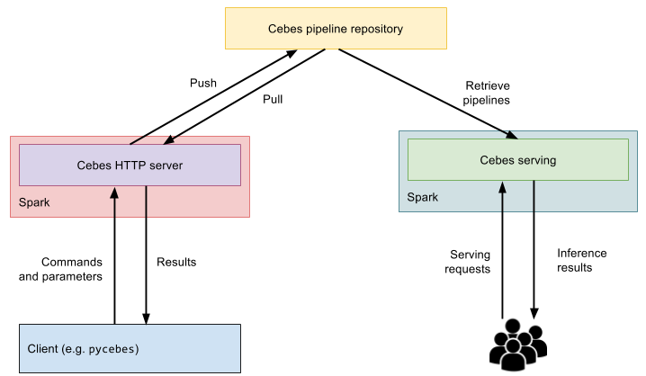

Serving pipelines
Once trained, Cebes pipelines should be pushed to a repository so that they are ready to be used in production serving. By serving, we mean to use the trained pipeline to answer online queries, usually through HTTP requests or message queues. Those requests are typically small (a few data samples), and the results can be retrieved synchronously or asynchronously. For running Pipelines on big datasets, we recommend to keep the pipelines in Cebes server, where a beefy Spark cluster is used.
The following figure should explain the relationship between Cebes server, repository and the serving component.

Deploy Cebes serving with Docker¶
Similar to other components, Cebes serving is also available as Docker images. These images package Cebes serving running on Spark in local mode, and with/without MariaDB. The images that has MariaDB should work out-of-the-box, while the images without MariaDB will need some additional configuration. Check docker hub for more information.
Technically, Cebes serving is a web app written in Scala that runs on Spark and the core Cebes engine. This web app answers HTTP requests synchronously or asynchronously, and serve certain number of pipelines that are specified in its configuration file.
Since Cebes serving is designed to answer online queries of typically a few data samples, it runs on Spark in local mode. Scalability can be achieved by having multiple instances of Cebes serving behind a load balancer. Many Cebes components were designed to be compatible with scalable deployment systems such as Kubernetes and friends. Talk to us if you need help in designing and building such a system!
Configure Cebes serving¶
Cebes serving is a generic web app that can serve any number of pipelines. When deploying Cebes serving, you specify the pipelines you want it to serve in a configuration file, along with other properties. A sample configuration file is shown below:
{ "pipelines": [ { "servingName": "anomaly-detect", "slotNamings": { "s1:inputDf": "input-data", "s5:outputDf": "result" }, "pipelineTag": "repo.company.net/bob/anomaly-detection:v2", "userName": "", "password": "" } ], "secured": false, "httpInterface": "0.0.0.0", "httpPort": 23000 }
In this configuration file, you specify the list of served pipelines in the pipelines list:
servingNameis an easy-to-remember name for the pipeline that the end-users can use when they send requests for this pipelineslotNamingsis an easy way to renaming slots in this pipeline. For example in this pipeline, theinputDfslot of stages1is renamed toinput-data, and slotoutputDfof stages5is renamed toresult. When the end-users send requests, they can provide input data intoinput-dataand get the results fromresult, without knowing the specific slots they are dealing with.slotNamingsis therefore a tool for you, as system administrators, to fine-tune how the pipelines will be served in production.pipelineTagis the tag of the pipeline to be served.userNameandpassword, if provided, are the credentials to be used to login to the repository to retrieve the pipeline.
Cebes serving API¶
Once started, Cebes serving exposes two endpoints /inference and /inferencesync to receive
HTTP requests, along with some other authentication endpoints if it is deployed in secured mode.
The /inference and /inferencesync endpoints are for asynchronous and synchronous inference, respectively.
A request sent to /inferencesync will block and return the inference results when it is ready.
A request sent to /inference will return immediately a job ID that can be used to periodically
check for the result.
The body of the inference request is a JSON object of the following fields:
{ "servingName": "anomaly-detect", "inputs": { "input-data": { "data": [ { "viscosity": 0.1, "proof_cut": 2 }, { "viscosity": 4.5, "proof_cut": 100 } ] } }, "outputs": [ "result" ], "maxDfSize": 2000 }
servingNameis the serving name to be requestedinputsis a map from slot namings (see previous section onslotNamings) to data. Users can feed any data, as long as their types, after JSON deserialization, is compatible to the type of the slot. Here we give theinput-dataslot a sample dataframe of 2 rows, whereviscosityandproof_cutare the 2 column names. This will be deserialized by Cebes serving and feed into theinput-dataslot.outputsis the list of slot namings to retrieved results. Users can request results from any slot belonging to the served pipeline, regardless of their types.maxDfSizeis an optional configuration. If the result is a Dataframe and it has more than this number of rows, then onlymaxDfSizerows will be returned.
A typical response for the above request is:
{ "outputs": { "result": { "schema": [...], "data": [ { ... } ] } } }
This is simply a map from output slots (that the end-users requested) to their corresponding values.
Since the result slot gives a Dataframe, the response will contain a schema of that dataframe,
and its rows.
See the tests in Cebes codebase for more examples.
Serving via message queues¶
In practice, it is more often to serve your requests coming in from a message queue, e.g. Apache Kafka. Supporting message queue in Cebes serving is in the work. Talk to us about your usecase if you are interested!